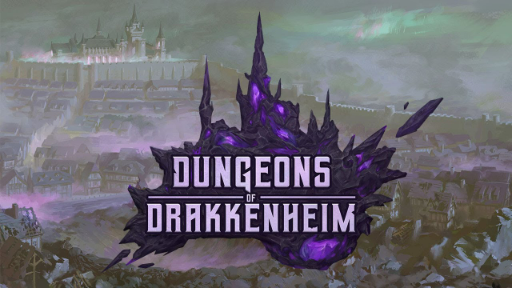
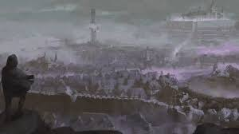

If you are not the DM, please leave.
“Magic attracts more magic. Under extraordinarily rare circumstances, magical energies crystallize into delerium. The stones slowly draw more raw magic into the world from distant planes, possible realities, and alternate dimensions. The rate is exponential. Considerably more leakage occurs around vast quantities of delerium. These chaotic energies are inherently destabilizing. Unfocused magic conjures up paradoxical improbabilities at random, leaving behind lingering eldritch contamination. Uncontained, these magical forces manifest as the Haze. More delerium forms within, and so the process accelerates.” – Archwizard Ryan Greymere
The meteor left behind vast deposits of delerium, enough to manifest an erratic magical field called the Haze. New delerium deposits gradually emerge within the Haze, which causes the affected region to expand slowly over time. Left unchecked, the Haze can overtake an entire world within a few centuries, leaving behind a chaotic landscape of churning madness and wild magic. The infected world cataclysmically shatters when more destructive magic inevitably erupts, sending a hail of delerium-filled comets throughout the cosmos. After hurtling through the Astral Void for eons, some collide with new worlds where the process begins again. Countless worlds have met this fate, the rest are wholly ignorant of the doom that might one day descend upon them. If nothing is done to stop the spread, the Haze will fully engulf Westemär in roughly one hundred and fifty years. Once this happens, little hope for reversal remains, and the dread mists will envelop the world two centuries thereafter. Civilization and society collapse into a monster-filled wasteland that catastrophically ruptures about one thousand years later. None know the complete truth about the Haze at the outset of the campaign, and little knowledge is revealed via divination magic save mad whispers. Throughout the adventure, player characters may find clues about delerium from which they may develop their own theories and speculations regarding the origins of the meteor. They can learn much by exploring deep into the ruins, especially locations such as the Inscrutable Tower, the crater, and Castle Drakken. Faction leaders and malfeasant wizards might also offer their research and insights to help players along the way
None have yet discovered that King Ulrich von Kessel IV and Queen-Consort Lenore von Kessel were both transformed into monsters. Ulrich is now part of the hideous Amalgamation in Castle Drakken, and Lenore has become a mad creature hiding in Queen’s Park. Their children haven’t been seen in fifteen years. It’s up to you to decide whether or not they survived, and where they might be found. Chapter 2: Running the Campaign 11 12 Dungeons OF Drakkenheim Beyond the immediate offspring of Ulrich IV, however, many relatives and cadet branches exist. As such, the House von Kessel family tree has been left intentionally vague so you and your players may freely insert your own player and non-player characters as potential heirs. They need not be one of Ulrich’s known children, but instead illegitimate offspring, a grandchild, niece, nephew, or other family relative. The most dramatically compelling possibilities include: h One or more player characters (known or unbeknownst to them) h A close relative of a player character (offspring, half-sibling, cousin, or niece/nephew) h The Queen of Thieves or a faction lieutenant (see the NPCs entries for specific ideas) Furthermore, there is no need for there to be a single surviving heir, or even any at all. Anyone can say they have royal blood. It’s another matter to prove it, and gain the support to actually take the crown. Finally, it’s possible another noble household could gain sufficient political clout and military power to turn a tenuous claim into a credible one, and simply supplant House von Kessel entirely.
At the outset of the campaign there is no heir apparent to the throne, nor have any credible claimants to the throne stepped forward. There are many reasons why a potential claimant to the throne hasn’t emerged yet. Decades of affairs, disaster, and war have ravaged the public records, and conclusively determining heredity via magical means requires the blood or remains of Ulrich IV. While an heir could possess a locket, signet ring, or some other document, this must be substantiated with something from the ruins to prove their identity and ancestry. Consider introducing one of the following additional complications: h Kept as a long-forgotten prisoner in an iron helmet in the Queen of Thieves’ dungeon. h Grew up adopted; no idea about their true parentage. h Working as a humble stablehand living in Emberwood Village. h Secretly hidden and protected by a distant noble house. h Petrified into a statue in Castle Drakken. h Accidentally banished to another plane. h Succumbed to contamination; transformed into a monster. h Secretly an arcane spellcaster; disinherited under the Edicts of Lumen. (See Appendix E) h Target of an assassination attempt by faction agents; have been hiding since. h Born from an affair; their birth was kept secret to conceal a scandal.
These six wondrous items were entrusted to the royal council of Westemär. Each identifies the bearers as important administrative and political figureheads. In addition to their potent magical powers (described in Appendix D), the seals have an important purpose in a special coronation ritual that attunes a new monarch to the Crown of Westemär itself (described in chapter 9). As such, many factions seek these seals, which are thought lost in the ruins. A few are already in the hands of several faction agents however! Here’s where you can find them though: